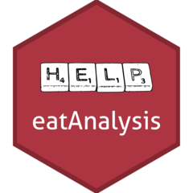

Update an
Update an .xlsx file.
update_xlsx.RdUpdate the content of an existing .xlsx file adding and removing rows in accordance to an identifier column. The content
of the columns of variables not in idCol is dropped.
Details
This function is useful if, for example, a recode table or decision table is written to .xlsx but the underlying data structure changes.
In such cases it might be useful to update the .xlsx table, this means removing no longer existing variables and adding rows for
new variables. Use cases might be tables created by eatGADS::getChangeMeta() or eatFDZ::reverse_check_docu().